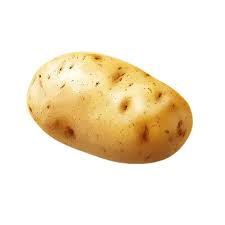

Potatoes are versatile, delicious, and one of the world's favorite root vegetables. Below are examples of how we display images of potatoes using HTML.
This image uses the path Images/Potato.jpg. We have explicitly set the width to 300 pixels and the height to 200 pixels using HTML attributes. A single russet potato on a wooden background

This image uses the path ./Potatoes.jpg (the ./ explicitly means "look in the current folder"). If the image fails
to load, the browser will display the alt text instead so screen readers and users still know what belongs here.
A basket full of freshly harvested gold potatoes